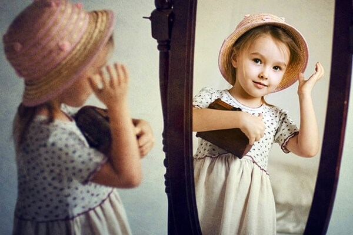
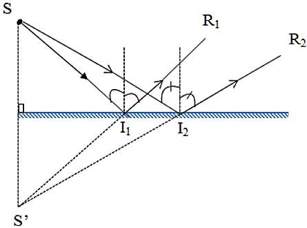
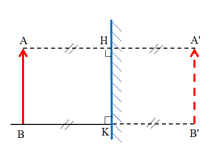

I. Ảnh của vật qua gương phẳng
Hình của vật nhìn thấy trong gương phẳng được gọi là ảnh của vật qua gương phẳng.
Ví dụ: Ảnh của một em bé khi đứng trước gương.

II. Tính chất ảnh của vật qua gương phẳng
- Ảnh của vật qua gương phẳng là ảnh ảo, không hứng được trên màn chắn.
- Ảnh có kích thước bằng kích thước của vật.
- Khoảng cách từ vật đến gương bằng khoảng cách từ ảnh đến gương.
- Ảnh và vật đối xứng nhau qua mặt gương.
III. Dựng ảnh của vật qua gương phẳng
1. Cách 1: Dựa vào định luật phản xạ ánh sáng
Ví dụ: Dựng ảnh của điểm sáng S.
- Bước 1: Vẽ hai tia sáng SI₁ và SI₂ từ điểm S tới gương.
- Bước 2: Áp dụng định luật phản xạ để vẽ hai tia phản xạ I₁R₁ và I₂R₂.
- Bước 3: Kéo dài các tia phản xạ về phía sau gương, giao điểm của chúng là ảnh S'.

2. Cách 2: Dựa vào tính chất ảnh
Ví dụ: Dựng ảnh của đoạn thẳng AB.
- Bước 1: Kẻ AH và BK vuông góc với gương.
- Bước 2: Lấy A'H = AH và B'K = BK ở phía sau gương.
- Bước 3: Nối A' với B' để được ảnh A'B' của vật AB.

Ghi nhớ
- Ảnh trong gương phẳng là ảnh ảo.
- Ảnh và vật có kích thước bằng nhau.
- Khoảng cách từ ảnh đến gương bằng khoảng cách từ vật đến gương.
- Có thể dựng ảnh bằng định luật phản xạ ánh sáng hoặc dựa vào tính chất đối xứng.